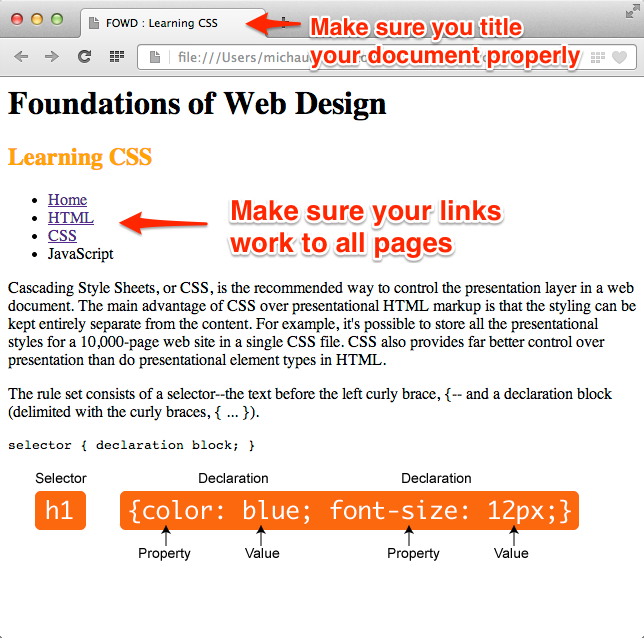

Chapter 05 - FTP and CSS
Purpose
From what you learned in this module, you'll add a little CSS to your website, check for any validation errors, and upload your site to a web-server for the world to see! Goal
This assignment will be more about learning how to upload your website to a web-server and learning how validation works than doing much with your HTML and CSS.
Requirements
- Duplicate Assignment Folder
- Create a duplicate of your a3_1-lastname folder and re-name it a4_1-lastname -- just like you did for the last assignment.
So, your folder should contain (at this point) two html documents:
- index.html
- html.html
- as well as a folder named "images" with a picture of you (150px x 150px).
Just like your html.html document in the last assignment, you will create a new html document called css.html to your assignment (a4_1-lastname) folder.
- Create A New Document
- Create a new HTML document to your assignment folder called "css.html"
- Like the index.html and html.html documents, it should have the
doctype,html,head,meta,titleandbodyelements - NOTE: You can copy the index.html and simply change the content between the
titletags andbodytags
- Like the index.html and html.html documents, it should have the
- Add Heading
-
Between the open and closing body element, add the following content:
- Keep a heading level 1 (
h1) element witht he text: Foundations of Web Design - Add a text heading level 2 element with the text: Learning CSS
- Remember: this text should also be in the title element that is in the
headelement
- Remember: this text should also be in the title element that is in the
- Keep a heading level 1 (
- Add Paragraph
- After the level 2 heading, place the following text within a paragraph
pelement:Cascading Style Sheets, or CSS, is the recommended way to control the presentation layer in a web document. The main advantage of CSS over presentational HTML markup is that the styling can be kept entirely separate from the content. For example, it's possible to store all the presentational styles for a 10,000-page web site in a single CSS file. CSS also provides far better control over presentation than do presentational element types in HTML.
- Add Another Paragraph
- After the first PARAGRAPH text, place another
pelement that contains:The rule set consists of a selector--the text before the left curly brace, {-- and a declaration block (delimited with the curly braces, { ... }).
- Preformatted Text
-
Next, add the following text just as you see it between the preformatted
pretags. NOTE: You don't need to worry about placing the paragraph element around them.selector { declaration block; }
- Add Image
-
Then, directly after the closing
pretag, DOWNLOAD the css-syntax.png image (see example)
Using CSS to Style
In the final step of working with your css.html document, you'll add some CSS to the page (like you did in Assignment 3). This time, I'm not going to give you the CSS to copy and paste–you'll have to figure out the rules needed from the description.
- Adding CSS
- Place the
styleelement so it's contained within theheadelement and placed just after the closingtitletag.<title> ... </title> <style> /* css rules go here */ </style> </head>
- Add a CSS Rule
-
Within the
styleelement, we want to select the text heading level 2 element and set the font color to orange. Remember:- the text heading level 2 (
h2) is the selector - the
coloris the property - and
orangeis our value
- the text heading level 2 (
Now your h2 line of text should be orange in your document! Check your work against the screenshot.
Note: There is a step—linking to the index.html and html.html documents—that you'll need to work through!
Screenshot
Make sure you compare each HTML document you've created to the screenshots below.Learning CSS
It should contain all new content, updated title element, and links to all previous documents.
Homepage
It should contain links to the html.html and css.html documents.
Learning HTML
This page should be updated so it links to the css.html document.

Validation
Remeber: validate the document! Do you remember how? Make sure you catch any errors and correct them.
The only "problem" in your css.html document you should see is one warning that says: "Using experimental feature: HTML5 Conformance Checker."
Upload
You will now upload your assignment folder to the web-server. You will be given information for you username and password. You will need a FTP application to upload - for both Mac and PC, I suggest you use Cyberduck (FREE!).
Once you've connected, drag your assignment folder to your web server.